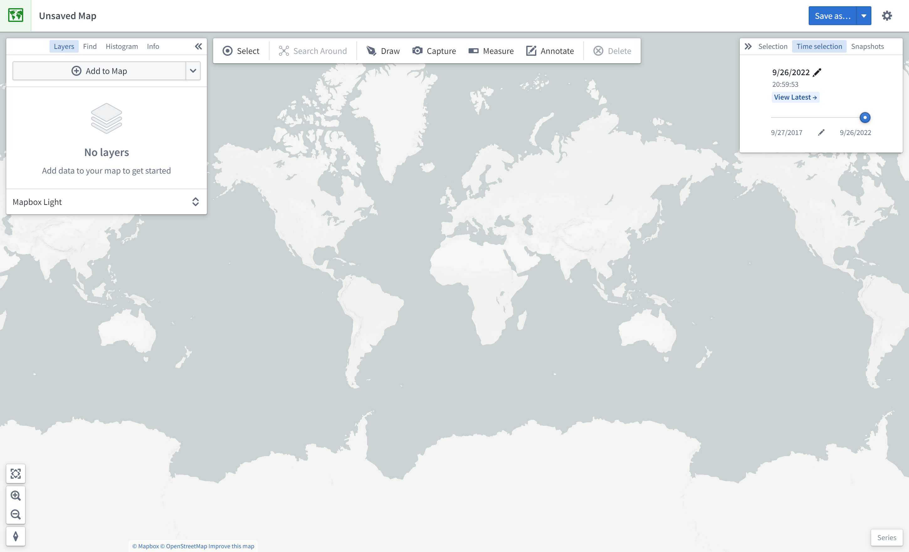
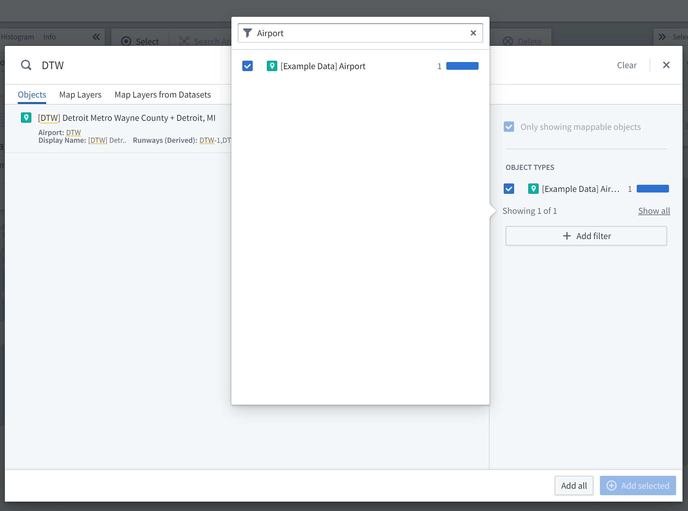
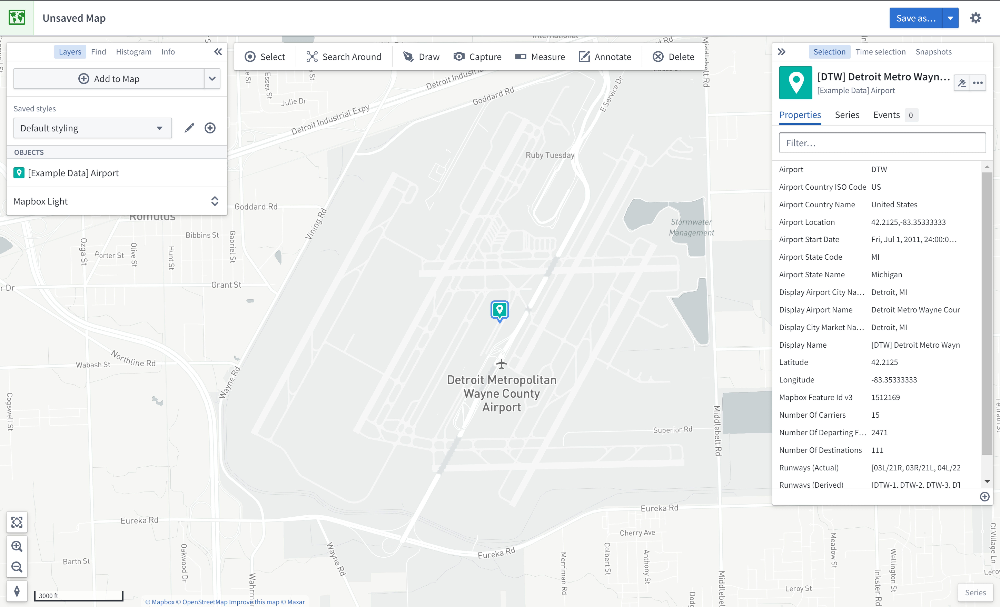
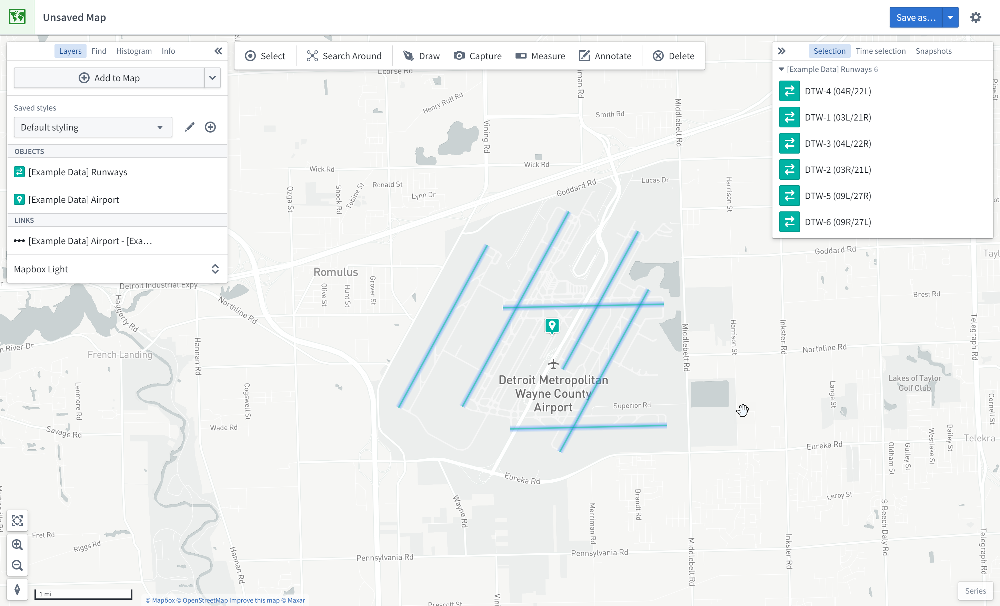
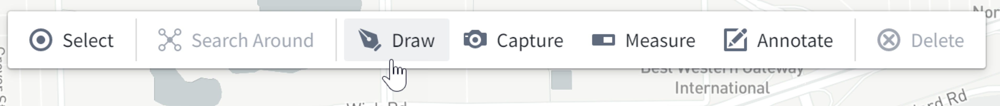
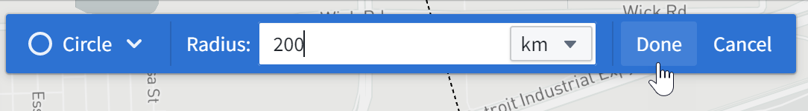

This guide demonstrates how to use the Map application with resources from the Foundry Training and Resources project. In this example, we will analyze some airline route data geospatially.
To create a map, expand the left-hand side Foundry navigation bar, then click on View all in the Apps section. You will find the Map application under the Operational Applications section.
When the Map application loads, you are presented with a blank map:

On the left side of the screen are the following panels:
At the top of the screen is a toolbar with the following functionality:
On the right side of the screen are the following panels:
At the bottom right of the screen is the Series panel for the temporal analysis of time series and event data.
In this example, we will search for the Detroit Metro Airport (DTW) and add it to the map.
First, click Add to Map in the Layers panel:

Then, search for DTW to find Detroit Metro Airport; you may need to select the object type [Example Data] Airport in the list on the right. Select the DTW airport object and click Add selected.

You should now see the map zoomed in on DTW airport; the object's geospatial data is a point, so the object is represented by a map pin indicating the coordinates. The Layers panel on the left now shows that you have an [Example Data] Airports layer, and the Selection panel on the right displays details about the selected object as shown below.

Try navigating around the map:
In this example, we will perform exploratory analysis regarding Detroit Metro Airport (DTW). First, add DTW's runways to the map by right-clicking the DTW object icon on the map, selecting Search Around, and then choosing [Example Data] Runway.

You should then see the runway objects added to the map as well. These runway objects are represented by lines on the map. You can hover the mouse over a runway line to see the runway ID. You can also click on a runway to select it and see more details in the Selection panel.

In this example, we will find other airports within 200 kilometers of Detroit Metro Airport (DTW).
First, click Draw to bring up the shape drawing tool:

Then, select the Circle tool:

Finally, from the map, click on DTW airport to choose the center point, enter "200", and select km.

This opens the Object Search dialog, filtered to objects that intersect with that circle. Choose [Example Data] Airports from the Object Type list, and click Add all. This will add six additional airports to the map.